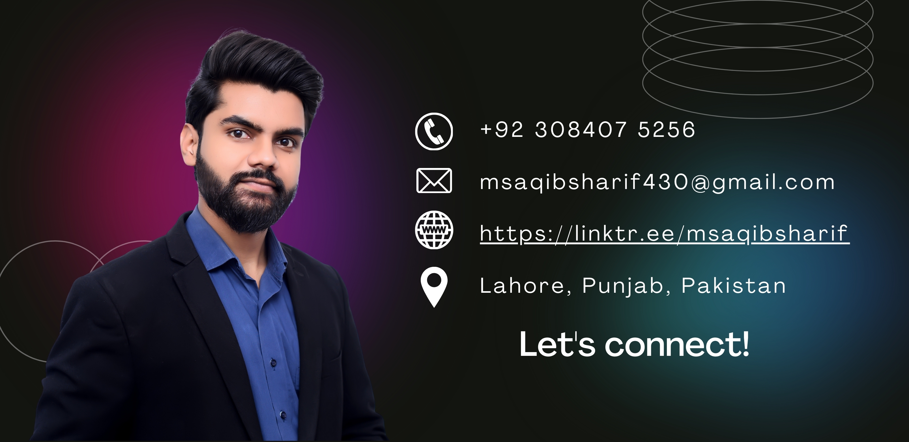

My Experience & Achievements
Here’s a brief overview of my certifications, professional experience, and accomplishments.

Certifications
- Freelancing Certification - May 2020 to Aug 2020 Acquired in-depth knowledge of freelancing platforms, client acquisition, and project management.
- WordPress Development Certification - May 2020 to Aug 2020 Focused on building and customizing WordPress websites, including themes, plugins, and SEO optimization.
- Search Engine Optimization (SEO) Certification - Oct 2021 to Dec 2021 Gained proficiency in on-page and off-page SEO strategies, keyword research, and content optimization.
- Affiliate Marketing Certification - July 2022 to Oct 2022 Developed skills in affiliate marketing strategies, including managing campaigns, promoting products, and tracking conversions.
- Video Editing Certification - July 2022 to Oct 2022 Mastered various video editing techniques using tools like Adobe Premiere Pro and Final Cut Pro.
- Graphics Designing Certification - Oct 2021 to Dec 2021 Learned design principles, tools like Adobe Photoshop, Illustrator, and the art of creating visually appealing digital graphics.
- Generative AI Certification - July 2024 to Sep 2024 Gained expertise in developing and deploying AI models, with a focus on generative applications such as text-to-image and text generation using cutting-edge tools like GPT, Stable Diffusion, and others.
- Over 20 Additional IT-related Courses (without certificates) - Ongoing, since 2020 Includes courses in advanced programming, machine learning, and cloud technologies to continuously expand technical knowledge.
Professional Experience
As a Flutter Mobile App Developer, I have worked on numerous projects, contributing to both the technical and creative aspects. Here’s a detailed summary of my experience:
- Flutter Mobile App Developer Intern at DevLogix Software House - August 2024 to November 2024. During my internship, I developed mobile applications using Flutter, enhancing my skills in UI/UX design, Firebase integration, and app deployment.
- College Eventy App - February 2024 to April 2024. Developed a college event management application using Flutter, Firebase, and Firestore. Integrated features like user authentication, admin roles, event notifications, and a dynamic event display system.
- Generative AI Apps - September 2024 to October 2024. Designed and developed multiple apps that utilize AI for text-to-speech, image restoration, and content generation. One notable project was a debating application using OpenAI’s Whisper for transcription and Groq API for generating real-time responses.
- Deep-Image-Prior Repository Project - October 2024 to Present. Contributed to the deep-image-prior repository for image restoration tasks, improving image quality through AI-based design transformations and running experiments with various models.
- Kaar-e-Kamal Welfare Society Mobile App - September 2024 to Present. developing a mobile app for Kaar-e-Kamal Welfare Society, a non-profit organization, to manage operations across 60 plus cities in Pakistan. The app includes features for donation tracking, volunteer registration, and notifications for urgent cases.
- Seller on Fiverr - 2023 to Present. Offering a variety of services, including Flutter mobile app development, website design, and SEO optimization. I have successfully delivered over 100+ projects, gaining a reputation for high-quality work and customer satisfaction.
- E-commerce Seller on Daraz - 2021 to Present. Managing an e-commerce store on Daraz, selling products ranging from tech gadgets to home essentials. I handle product listings, order management, and customer service to maintain a positive buyer experience.
Achievements
- AI Project on Stable Diffusion and Generative Models - August 2024 to Present. Completed multiple projects utilizing AI models like Stable Diffusion for image generation and other generative models to address real-world business problems, resulting in improved client solutions and faster project timelines.
- Kaar-e-Kamal Welfare Society App Leadership - September 2024. Led the development of a mobile app for Kaar-e-Kamal Welfare Society, improving operational efficiency across 60 plus cities. The app now supports better resource allocation and case tracking, helping streamline donations and volunteer management.
- Prime Minister's Laptop Award - Received in 2023 for academic excellence and outstanding performance during my Bachelor’s program at UET Lahore.
- Successful Freelance Career - Over 4 years of freelancing learning Experience, delivering high-quality websites to clients, gaining recognition for excellent customer service and consistently achieving 5-star ratings on platform like Fiverr.
- 3+ Years of Successful E-commerce on Daraz - Managed an e-commerce store on Daraz, growing the business significantly. Successfully launched multiple product lines, achieving a consistent track record of high ratings and positive feedback from over 300 customers.
Volunteer Experience
- UET Tribune RCET - President (May 2024 - Present). UET Tribune is UET's largest media network, dedicated to delivering comprehensive coverage of campus events, news, and student activities through diverse multimedia platforms. Joined UET Tribune's Coverage Team in 2022, became Coverage Head in 2023, and currently serving as President.
- Prosoft UET Lahore - Video Editing Head (May 2023 - May 2024). Organized and delivered workshops at UET Lahore (Gujranwala Campus), covering film production-based coverage skills and Adobe Premiere Pro editing skills to support junior students' learning.